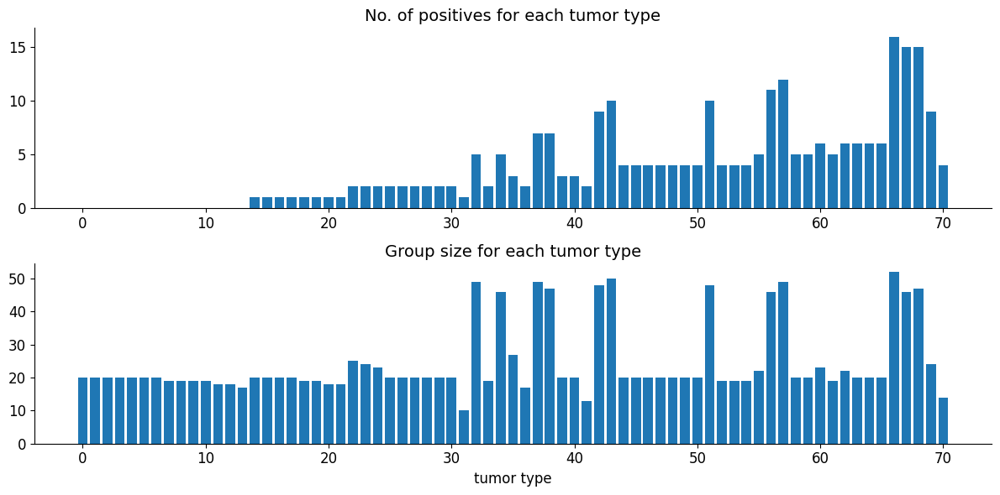
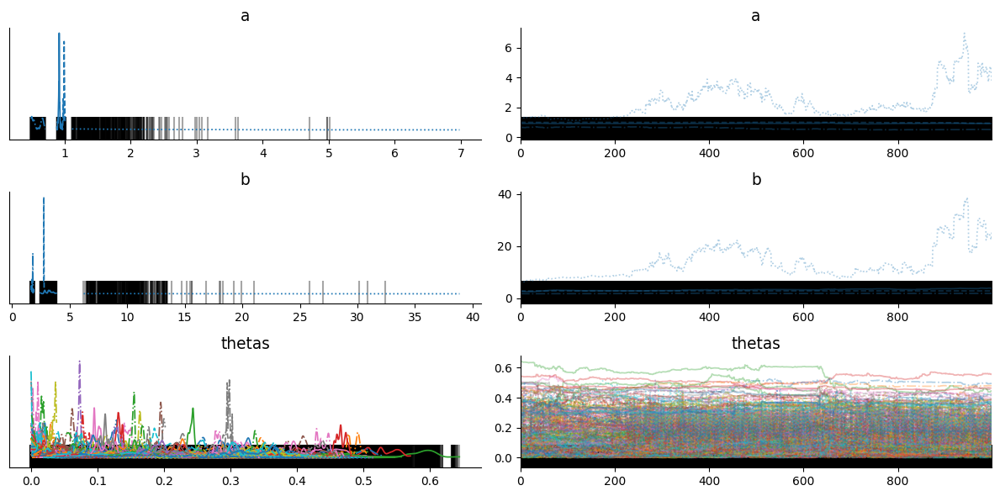
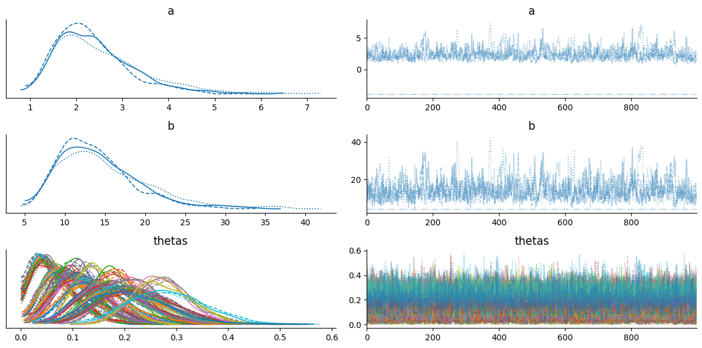
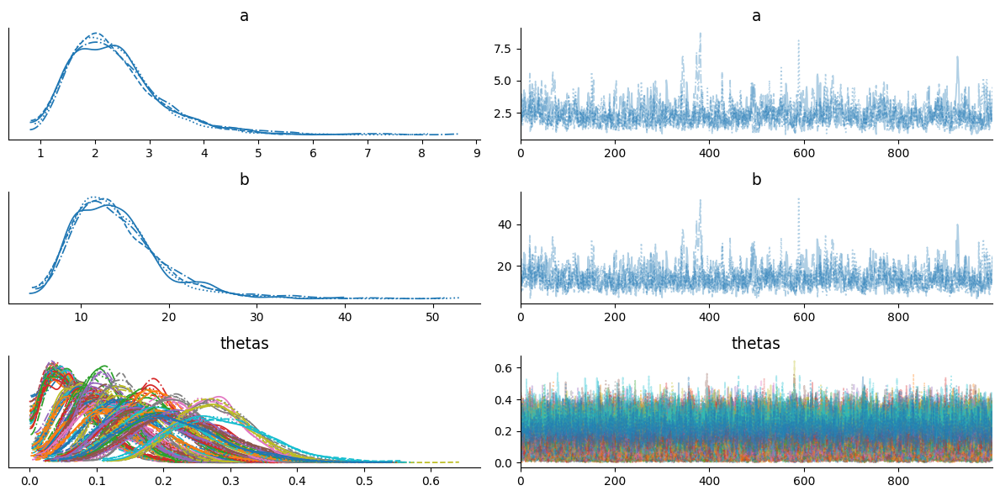

Change of Variable in HMC#
Rat tumor problem: We have J certain kinds of rat tumor diseases. For each kind of tumor, we test \(N_{j}\) people/animals and among those \(y_{j}\) tested positive. Here we assume that \(y_{j}\) is distrubuted with Binom(\(N_{j}\), \(\theta_{j}\)). Our objective is to approximate \(\theta_{j}\) for each type of tumor.
In particular we use following binomial hierarchical model where \(y_{j}\) and \(N_{j}\) are observed variables.
import jax
from datetime import date
rng_key = jax.random.key(int(date.today().strftime("%Y%m%d")))

Posterior Sampling#
Now we use Blackjax’s NUTS algorithm to get posterior samples of \(a\), \(b\), and \(\theta\)
from collections import namedtuple
params = namedtuple("model_params", ["a", "b", "thetas"])
def joint_logdensity(params):
# improper prior for a,b
logdensity_ab = jnp.log(jnp.power(params.a + params.b, -2.5))
# logdensity prior of theta
logdensity_thetas = tfd.Beta(params.a, params.b).log_prob(params.thetas).sum()
# loglikelihood of y
logdensity_y = jnp.sum(
tfd.Binomial(group_size, probs=params.thetas).log_prob(n_of_positives)
)
return logdensity_ab + logdensity_thetas + logdensity_y
We take initial parameters from uniform distribution
rng_key, init_key = jax.random.split(rng_key)
n_params = n_rat_tumors + 2
def init_param_fn(seed):
"""
initialize a, b & thetas
"""
key1, key2, key3 = jax.random.split(seed, 3)
return params(
a=tfd.Uniform(0, 3).sample(seed=key1),
b=tfd.Uniform(0, 3).sample(seed=key2),
thetas=tfd.Uniform(0, 1).sample(n_rat_tumors, seed=key3),
)
init_param = init_param_fn(init_key)
joint_logdensity(init_param) # sanity check
Array(-1437.8372, dtype=float32)
Now we use blackjax’s window adaption algorithm to get NUTS kernel and initial states. Window adaption algorithm will automatically configure inverse_mass_matrix and step size
%%time
warmup = blackjax.window_adaptation(blackjax.nuts, joint_logdensity)
# we use 4 chains for sampling
n_chains = 4
rng_key, init_key, warmup_key = jax.random.split(rng_key, 3)
init_keys = jax.random.split(init_key, n_chains)
init_params = jax.vmap(init_param_fn)(init_keys)
@jax.vmap
def call_warmup(seed, param):
(initial_states, tuned_params), _ = warmup.run(seed, param, 1000)
return initial_states, tuned_params
warmup_keys = jax.random.split(warmup_key, n_chains)
initial_states, tuned_params = jax.jit(call_warmup)(warmup_keys, init_params)
CPU times: user 9.22 s, sys: 374 ms, total: 9.6 s
Wall time: 5.03 s
Now we write inference loop for multiple chains
def inference_loop_multiple_chains(
rng_key, initial_states, tuned_params, log_prob_fn, num_samples, num_chains
):
kernel = blackjax.nuts.build_kernel()
def step_fn(key, state, **params):
return kernel(key, state, log_prob_fn, **params)
def one_step(states, rng_key):
keys = jax.random.split(rng_key, num_chains)
states, infos = jax.vmap(step_fn)(keys, states, **tuned_params)
return states, (states, infos)
keys = jax.random.split(rng_key, num_samples)
_, (states, infos) = jax.lax.scan(one_step, initial_states, keys)
return (states, infos)
%%time
n_samples = 1000
rng_key, sample_key = jax.random.split(rng_key)
states, infos = inference_loop_multiple_chains(
sample_key, initial_states, tuned_params, joint_logdensity, n_samples, n_chains
)
CPU times: user 8.6 s, sys: 280 ms, total: 8.88 s
Wall time: 3.56 s
Arviz Plots#
We have all our posterior samples stored in states.position dictionary and infos store additional information like acceptance probability, divergence, etc. Now, we can use certain diagnostics to judge if our MCMC samples are converged on stationary distribution. Some of widely diagnostics are trace plots, potential scale reduction factor (R hat), divergences, etc. Arviz library provides quicker ways to anaylze these diagnostics. We can use arviz.summary() and arviz_plot_trace(), but these functions take specific format (arviz’s trace) as a input.
# make arviz trace from states
trace = arviz_trace_from_states(states, infos)
summ_df = az.summary(trace)
summ_df
| mean | sd | hdi_3% | hdi_97% | mcse_mean | mcse_sd | ess_bulk | ess_tail | r_hat | |
|---|---|---|---|---|---|---|---|---|---|
| a | 1.205 | 0.855 | 0.493 | 3.021 | 0.338 | 0.317 | 4.0 | 13.0 | 3.37 |
| b | 5.343 | 5.800 | 1.637 | 17.941 | 2.458 | 2.104 | 5.0 | 11.0 | 2.96 |
| thetas[0] | 0.087 | 0.094 | 0.000 | 0.259 | 0.045 | 0.024 | 6.0 | 29.0 | 1.82 |
| thetas[1] | 0.043 | 0.036 | 0.000 | 0.116 | 0.011 | 0.009 | 9.0 | 20.0 | 1.39 |
| thetas[2] | 0.033 | 0.030 | 0.000 | 0.086 | 0.009 | 0.007 | 9.0 | 28.0 | 1.39 |
| thetas[3] | 0.051 | 0.043 | 0.000 | 0.118 | 0.013 | 0.007 | 9.0 | 38.0 | 1.34 |
| thetas[4] | 0.047 | 0.035 | 0.000 | 0.101 | 0.010 | 0.004 | 11.0 | 47.0 | 1.28 |
| thetas[5] | 0.032 | 0.027 | 0.000 | 0.079 | 0.009 | 0.006 | 10.0 | 29.0 | 1.34 |
| thetas[6] | 0.026 | 0.031 | 0.000 | 0.085 | 0.011 | 0.009 | 7.0 | 31.0 | 1.53 |
| thetas[7] | 0.055 | 0.044 | 0.000 | 0.139 | 0.016 | 0.006 | 7.0 | 17.0 | 1.56 |
| thetas[8] | 0.038 | 0.028 | 0.000 | 0.085 | 0.009 | 0.006 | 10.0 | 29.0 | 1.34 |
| thetas[9] | 0.037 | 0.039 | 0.000 | 0.111 | 0.010 | 0.006 | 11.0 | 19.0 | 1.28 |
| thetas[10] | 0.049 | 0.035 | 0.000 | 0.096 | 0.012 | 0.004 | 8.0 | 35.0 | 1.43 |
| thetas[11] | 0.039 | 0.033 | 0.000 | 0.095 | 0.010 | 0.006 | 10.0 | 33.0 | 1.33 |
| thetas[12] | 0.126 | 0.165 | 0.000 | 0.488 | 0.080 | 0.059 | 5.0 | 13.0 | 2.03 |
| thetas[13] | 0.134 | 0.159 | 0.000 | 0.419 | 0.077 | 0.043 | 5.0 | 13.0 | 2.02 |
| thetas[14] | 0.091 | 0.047 | 0.006 | 0.161 | 0.012 | 0.004 | 15.0 | 124.0 | 1.19 |
| thetas[15] | 0.061 | 0.036 | 0.002 | 0.119 | 0.011 | 0.008 | 10.0 | 27.0 | 1.32 |
| thetas[16] | 0.178 | 0.146 | 0.017 | 0.438 | 0.071 | 0.038 | 5.0 | 34.0 | 2.18 |
| thetas[17] | 0.115 | 0.054 | 0.023 | 0.215 | 0.018 | 0.006 | 9.0 | 21.0 | 1.36 |
| thetas[18] | 0.088 | 0.059 | 0.017 | 0.191 | 0.022 | 0.006 | 8.0 | 71.0 | 1.50 |
| thetas[19] | 0.115 | 0.060 | 0.003 | 0.193 | 0.017 | 0.004 | 15.0 | 34.0 | 1.20 |
| thetas[20] | 0.160 | 0.156 | 0.008 | 0.453 | 0.077 | 0.044 | 5.0 | 11.0 | 2.38 |
| thetas[21] | 0.111 | 0.063 | 0.018 | 0.227 | 0.027 | 0.015 | 6.0 | 12.0 | 1.69 |
| thetas[22] | 0.147 | 0.067 | 0.055 | 0.258 | 0.031 | 0.013 | 5.0 | 15.0 | 2.06 |
| thetas[23] | 0.122 | 0.061 | 0.029 | 0.253 | 0.026 | 0.017 | 6.0 | 17.0 | 1.71 |
| thetas[24] | 0.105 | 0.042 | 0.033 | 0.170 | 0.012 | 0.002 | 13.0 | 102.0 | 1.26 |
| thetas[25] | 0.170 | 0.100 | 0.046 | 0.360 | 0.047 | 0.021 | 5.0 | 28.0 | 2.00 |
| thetas[26] | 0.113 | 0.039 | 0.032 | 0.172 | 0.012 | 0.005 | 10.0 | 53.0 | 1.34 |
| thetas[27] | 0.233 | 0.114 | 0.043 | 0.419 | 0.052 | 0.021 | 5.0 | 11.0 | 2.10 |
| thetas[28] | 0.122 | 0.042 | 0.050 | 0.211 | 0.012 | 0.006 | 12.0 | 33.0 | 1.25 |
| thetas[29] | 0.140 | 0.111 | 0.006 | 0.330 | 0.053 | 0.026 | 5.0 | 12.0 | 2.52 |
| thetas[30] | 0.108 | 0.046 | 0.020 | 0.180 | 0.011 | 0.006 | 23.0 | 121.0 | 1.28 |
| thetas[31] | 0.129 | 0.084 | 0.007 | 0.295 | 0.031 | 0.013 | 8.0 | 13.0 | 1.44 |
| thetas[32] | 0.090 | 0.029 | 0.045 | 0.142 | 0.009 | 0.005 | 10.0 | 32.0 | 1.32 |
| thetas[33] | 0.114 | 0.064 | 0.018 | 0.220 | 0.028 | 0.013 | 5.0 | 12.0 | 2.03 |
| thetas[34] | 0.135 | 0.045 | 0.063 | 0.227 | 0.018 | 0.009 | 7.0 | 15.0 | 1.57 |
| thetas[35] | 0.119 | 0.074 | 0.025 | 0.283 | 0.032 | 0.021 | 6.0 | 15.0 | 1.89 |
| thetas[36] | 0.284 | 0.124 | 0.063 | 0.481 | 0.059 | 0.030 | 5.0 | 14.0 | 2.59 |
| thetas[37] | 0.143 | 0.042 | 0.067 | 0.220 | 0.014 | 0.008 | 10.0 | 26.0 | 1.38 |
| thetas[38] | 0.133 | 0.044 | 0.059 | 0.194 | 0.017 | 0.003 | 7.0 | 32.0 | 1.49 |
| thetas[39] | 0.158 | 0.103 | 0.055 | 0.392 | 0.048 | 0.038 | 5.0 | 14.0 | 2.01 |
| thetas[40] | 0.156 | 0.063 | 0.061 | 0.272 | 0.026 | 0.008 | 7.0 | 44.0 | 1.59 |
| thetas[41] | 0.270 | 0.085 | 0.094 | 0.389 | 0.037 | 0.020 | 6.0 | 14.0 | 1.90 |
| thetas[42] | 0.178 | 0.044 | 0.115 | 0.264 | 0.016 | 0.007 | 8.0 | 59.0 | 1.44 |
| thetas[43] | 0.184 | 0.047 | 0.116 | 0.260 | 0.018 | 0.006 | 7.0 | 42.0 | 1.52 |
| thetas[44] | 0.189 | 0.072 | 0.078 | 0.324 | 0.027 | 0.009 | 8.0 | 37.0 | 1.40 |
| thetas[45] | 0.270 | 0.089 | 0.101 | 0.388 | 0.039 | 0.013 | 6.0 | 20.0 | 1.87 |
| thetas[46] | 0.203 | 0.111 | 0.075 | 0.419 | 0.052 | 0.024 | 5.0 | 12.0 | 2.32 |
| thetas[47] | 0.163 | 0.051 | 0.096 | 0.252 | 0.018 | 0.004 | 10.0 | 58.0 | 1.35 |
| thetas[48] | 0.190 | 0.061 | 0.100 | 0.297 | 0.023 | 0.008 | 8.0 | 64.0 | 1.46 |
| thetas[49] | 0.174 | 0.054 | 0.046 | 0.243 | 0.019 | 0.013 | 9.0 | 27.0 | 1.58 |
| thetas[50] | 0.225 | 0.081 | 0.096 | 0.370 | 0.032 | 0.011 | 7.0 | 24.0 | 1.61 |
| thetas[51] | 0.183 | 0.049 | 0.091 | 0.260 | 0.016 | 0.005 | 10.0 | 44.0 | 1.34 |
| thetas[52] | 0.278 | 0.164 | 0.120 | 0.607 | 0.079 | 0.046 | 6.0 | 25.0 | 1.79 |
| thetas[53] | 0.270 | 0.157 | 0.079 | 0.561 | 0.076 | 0.040 | 5.0 | 14.0 | 2.16 |
| thetas[54] | 0.188 | 0.069 | 0.084 | 0.318 | 0.017 | 0.008 | 14.0 | 24.0 | 1.20 |
| thetas[55] | 0.219 | 0.079 | 0.084 | 0.372 | 0.032 | 0.016 | 6.0 | 15.0 | 1.74 |
| thetas[56] | 0.283 | 0.059 | 0.171 | 0.380 | 0.024 | 0.011 | 6.0 | 16.0 | 1.78 |
| thetas[57] | 0.232 | 0.053 | 0.158 | 0.315 | 0.021 | 0.006 | 8.0 | 73.0 | 1.49 |
| thetas[58] | 0.261 | 0.071 | 0.140 | 0.378 | 0.025 | 0.008 | 8.0 | 16.0 | 1.45 |
| thetas[59] | 0.221 | 0.078 | 0.078 | 0.340 | 0.028 | 0.011 | 7.0 | 34.0 | 1.52 |
| thetas[60] | 0.313 | 0.111 | 0.138 | 0.514 | 0.048 | 0.023 | 6.0 | 20.0 | 1.91 |
| thetas[61] | 0.332 | 0.107 | 0.165 | 0.503 | 0.049 | 0.020 | 5.0 | 29.0 | 2.16 |
| thetas[62] | 0.301 | 0.102 | 0.124 | 0.485 | 0.043 | 0.020 | 6.0 | 13.0 | 1.83 |
| thetas[63] | 0.327 | 0.104 | 0.166 | 0.481 | 0.046 | 0.015 | 6.0 | 19.0 | 1.99 |
| thetas[64] | 0.238 | 0.056 | 0.153 | 0.344 | 0.018 | 0.005 | 11.0 | 64.0 | 1.30 |
| thetas[65] | 0.332 | 0.096 | 0.184 | 0.466 | 0.042 | 0.010 | 6.0 | 30.0 | 1.92 |
| thetas[66] | 0.330 | 0.072 | 0.227 | 0.467 | 0.033 | 0.017 | 6.0 | 26.0 | 1.78 |
| thetas[67] | 0.315 | 0.079 | 0.222 | 0.459 | 0.036 | 0.017 | 6.0 | 12.0 | 1.89 |
| thetas[68] | 0.331 | 0.055 | 0.207 | 0.417 | 0.017 | 0.011 | 10.0 | 19.0 | 1.47 |
| thetas[69] | 0.329 | 0.051 | 0.228 | 0.430 | 0.017 | 0.013 | 8.0 | 27.0 | 1.43 |
| thetas[70] | 0.259 | 0.082 | 0.094 | 0.371 | 0.033 | 0.013 | 7.0 | 30.0 | 1.60 |
r_hat is showing measure of each chain is converged to stationary distribution. r_hat should be less than or equal to 1.01, here we get r_hat far from 1.01 for each latent sample.

Trace plots also looks terrible and does not seems to be converged! Also, black band shows that every sample is diverged from original distribution. So what’s wrong happeing here?
Well, it’s related to support of latent variable. In HMC, the latent variable must be in an unconstrained space, but in above model theta is constrained in between 0 to 1. We can use change of variable trick to solve above problem
Change of Variable#
We can sample from logits which is in unconstrained space and in joint_logdensity() we can convert logits to theta by suitable bijector (sigmoid). We calculate jacobian (first order derivaive) of bijector to tranform one probability distribution to another
transform_fn = jax.nn.sigmoid
log_jacobian_fn = lambda logit: jnp.log(jnp.abs(jnp.diag(jax.jacfwd(transform_fn)(logit))))
Alternatively, using the bijector class in TFP directly:
bij = tfb.Sigmoid()
transform_fn = bij.forward
log_jacobian_fn = bij.forward_log_det_jacobian
params = namedtuple("model_params", ["a", "b", "logits"])
def joint_logdensity_change_of_var(params):
# change of variable
thetas = transform_fn(params.logits)
log_det_jacob = jnp.sum(log_jacobian_fn(params.logits))
# improper prior for a,b
logdensity_ab = jnp.log(jnp.power(params.a + params.b, -2.5))
# logdensity prior of theta
logdensity_thetas = tfd.Beta(params.a, params.b).log_prob(thetas).sum()
# loglikelihood of y
logdensity_y = jnp.sum(
tfd.Binomial(group_size, probs=thetas).log_prob(n_of_positives)
)
return logdensity_ab + logdensity_thetas + logdensity_y + log_det_jacob
except for the change of variable in joint_logdensity() function, everthing will remain same
rng_key, init_key = jax.random.split(rng_key)
def init_param_fn(seed):
"""
initialize a, b & logits
"""
key1, key2, key3 = jax.random.split(seed, 3)
return params(
a=tfd.Uniform(0, 3).sample(seed=key1),
b=tfd.Uniform(0, 3).sample(seed=key2),
logits=tfd.Uniform(-2, 2).sample(n_rat_tumors, key3),
)
init_param = init_param_fn(init_key)
joint_logdensity_change_of_var(init_param) # sanity check
Array(-1008.2986, dtype=float32)
%%time
warmup = blackjax.window_adaptation(blackjax.nuts, joint_logdensity_change_of_var)
# we use 4 chains for sampling
n_chains = 4
rng_key, init_key, warmup_key = jax.random.split(rng_key, 3)
init_keys = jax.random.split(init_key, n_chains)
init_params = jax.vmap(init_param_fn)(init_keys)
@jax.vmap
def call_warmup(seed, param):
(initial_states, tuned_params), _ = warmup.run(seed, param, 1000)
return initial_states, tuned_params
warmup_keys = jax.random.split(warmup_key, n_chains)
initial_states, tuned_params = call_warmup(warmup_keys, init_params)
CPU times: user 12.5 s, sys: 752 ms, total: 13.3 s
Wall time: 7.96 s
%%time
n_samples = 1000
rng_key, sample_key = jax.random.split(rng_key)
states, infos = inference_loop_multiple_chains(
sample_key, initial_states, tuned_params, joint_logdensity_change_of_var, n_samples, n_chains
)
CPU times: user 12.2 s, sys: 278 ms, total: 12.5 s
Wall time: 4.17 s
# convert logits samples to theta samples
position = states.position._asdict()
position["thetas"] = jax.nn.sigmoid(position["logits"])
del position["logits"] # delete logits
states = states._replace(position=position)
# make arviz trace from states
trace = arviz_trace_from_states(states, infos, burn_in=0)
summ_df = az.summary(trace)
summ_df
| mean | sd | hdi_3% | hdi_97% | mcse_mean | mcse_sd | ess_bulk | ess_tail | r_hat | |
|---|---|---|---|---|---|---|---|---|---|
| a | 0.857 | 2.880 | -3.933 | 3.867 | 1.382 | 0.737 | 7.0 | 4.0 | 1.53 |
| b | 11.929 | 6.635 | 3.933 | 22.797 | 2.340 | 0.302 | 7.0 | 4.0 | 1.53 |
| thetas[0] | 0.053 | 0.041 | 0.000 | 0.130 | 0.009 | 0.001 | 23.0 | 1503.0 | 1.11 |
| thetas[1] | 0.064 | 0.037 | 0.001 | 0.134 | 0.001 | 0.005 | 2087.0 | 1616.0 | 1.53 |
| thetas[2] | 0.056 | 0.039 | 0.006 | 0.132 | 0.008 | 0.001 | 40.0 | 1842.0 | 1.07 |
| thetas[3] | 0.059 | 0.037 | 0.002 | 0.130 | 0.004 | 0.004 | 1415.0 | 1433.0 | 1.52 |
| thetas[4] | 0.076 | 0.042 | 0.001 | 0.131 | 0.010 | 0.001 | 20.0 | 1151.0 | 1.13 |
| thetas[5] | 0.055 | 0.041 | 0.003 | 0.134 | 0.009 | 0.001 | 27.0 | 1488.0 | 1.09 |
| thetas[6] | 0.066 | 0.036 | 0.004 | 0.132 | 0.001 | 0.004 | 890.0 | 1915.0 | 1.53 |
| thetas[7] | 0.058 | 0.039 | 0.001 | 0.129 | 0.007 | 0.002 | 57.0 | 1453.0 | 1.09 |
| thetas[8] | 0.050 | 0.045 | 0.003 | 0.133 | 0.014 | 0.001 | 8.0 | 4.0 | 1.46 |
| thetas[9] | 0.064 | 0.037 | 0.002 | 0.136 | 0.001 | 0.005 | 2431.0 | 1241.0 | 1.53 |
| thetas[10] | 0.057 | 0.041 | 0.003 | 0.134 | 0.008 | 0.001 | 29.0 | 1906.0 | 1.09 |
| thetas[11] | 0.059 | 0.040 | 0.004 | 0.138 | 0.007 | 0.002 | 75.0 | 1723.0 | 1.14 |
| thetas[12] | 0.056 | 0.043 | 0.002 | 0.136 | 0.010 | 0.001 | 18.0 | 1266.0 | 1.15 |
| thetas[13] | 0.064 | 0.041 | 0.003 | 0.142 | 0.006 | 0.003 | 142.0 | 1123.0 | 1.29 |
| thetas[14] | 0.105 | 0.047 | 0.015 | 0.171 | 0.011 | 0.001 | 22.0 | 1454.0 | 1.12 |
| thetas[15] | 0.081 | 0.045 | 0.016 | 0.169 | 0.010 | 0.001 | 27.0 | 1858.0 | 1.09 |
| thetas[16] | 0.080 | 0.047 | 0.014 | 0.174 | 0.011 | 0.001 | 20.0 | 1161.0 | 1.13 |
| thetas[17] | 0.086 | 0.043 | 0.016 | 0.174 | 0.005 | 0.004 | 490.0 | 1921.0 | 1.53 |
| thetas[18] | 0.092 | 0.042 | 0.019 | 0.174 | 0.001 | 0.005 | 4766.0 | 1313.0 | 1.52 |
| thetas[19] | 0.079 | 0.050 | 0.010 | 0.170 | 0.014 | 0.001 | 13.0 | 679.0 | 1.21 |
| thetas[20] | 0.134 | 0.076 | 0.033 | 0.240 | 0.031 | 0.011 | 8.0 | 1786.0 | 1.42 |
| thetas[21] | 0.083 | 0.052 | 0.011 | 0.182 | 0.013 | 0.001 | 17.0 | 1231.0 | 1.16 |
| thetas[22] | 0.093 | 0.045 | 0.029 | 0.180 | 0.010 | 0.001 | 21.0 | 2101.0 | 1.12 |
| thetas[23] | 0.090 | 0.051 | 0.028 | 0.183 | 0.015 | 0.001 | 11.0 | 5.0 | 1.28 |
| thetas[24] | 0.121 | 0.046 | 0.036 | 0.202 | 0.007 | 0.004 | 43.0 | 2521.0 | 1.06 |
| thetas[25] | 0.111 | 0.048 | 0.037 | 0.211 | 0.007 | 0.004 | 74.0 | 1835.0 | 1.12 |
| thetas[26] | 0.125 | 0.047 | 0.032 | 0.209 | 0.003 | 0.005 | 142.0 | 2009.0 | 1.37 |
| thetas[27] | 0.108 | 0.050 | 0.030 | 0.203 | 0.009 | 0.002 | 43.0 | 1656.0 | 1.07 |
| thetas[28] | 0.118 | 0.047 | 0.031 | 0.212 | 0.001 | 0.006 | 5818.0 | 1897.0 | 1.53 |
| thetas[29] | 0.122 | 0.046 | 0.034 | 0.205 | 0.001 | 0.005 | 1752.0 | 1409.0 | 1.53 |
| thetas[30] | 0.108 | 0.050 | 0.031 | 0.204 | 0.010 | 0.002 | 31.0 | 1760.0 | 1.08 |
| thetas[31] | 0.121 | 0.055 | 0.026 | 0.231 | 0.001 | 0.007 | 4516.0 | 1487.0 | 1.52 |
| thetas[32] | 0.115 | 0.035 | 0.047 | 0.181 | 0.001 | 0.004 | 323.0 | 2167.0 | 1.52 |
| thetas[33] | 0.100 | 0.063 | 0.028 | 0.211 | 0.021 | 0.001 | 8.0 | 4.0 | 1.44 |
| thetas[34] | 0.105 | 0.043 | 0.046 | 0.185 | 0.012 | 0.001 | 13.0 | 1852.0 | 1.22 |
| thetas[35] | 0.102 | 0.057 | 0.036 | 0.202 | 0.020 | 0.001 | 8.0 | 4.0 | 1.43 |
| thetas[36] | 0.137 | 0.052 | 0.036 | 0.230 | 0.005 | 0.005 | 110.0 | 1925.0 | 1.23 |
| thetas[37] | 0.139 | 0.037 | 0.073 | 0.217 | 0.002 | 0.004 | 4429.0 | 2320.0 | 1.53 |
| thetas[38] | 0.138 | 0.040 | 0.075 | 0.222 | 0.008 | 0.001 | 30.0 | 2316.0 | 1.08 |
| thetas[39] | 0.136 | 0.055 | 0.051 | 0.247 | 0.011 | 0.002 | 36.0 | 1431.0 | 1.07 |
| thetas[40] | 0.153 | 0.051 | 0.048 | 0.245 | 0.003 | 0.006 | 152.0 | 1583.0 | 1.35 |
| thetas[41] | 0.154 | 0.058 | 0.034 | 0.253 | 0.001 | 0.007 | 712.0 | 1789.0 | 1.53 |
| thetas[42] | 0.161 | 0.049 | 0.088 | 0.252 | 0.014 | 0.001 | 14.0 | 2433.0 | 1.20 |
| thetas[43] | 0.172 | 0.049 | 0.103 | 0.268 | 0.014 | 0.001 | 14.0 | 2032.0 | 1.20 |
| thetas[44] | 0.167 | 0.056 | 0.066 | 0.279 | 0.006 | 0.006 | 279.0 | 2205.0 | 1.53 |
| thetas[45] | 0.162 | 0.058 | 0.076 | 0.284 | 0.012 | 0.002 | 31.0 | 1640.0 | 1.08 |
| thetas[46] | 0.179 | 0.055 | 0.062 | 0.277 | 0.001 | 0.006 | 743.0 | 2210.0 | 1.53 |
| thetas[47] | 0.168 | 0.056 | 0.062 | 0.279 | 0.005 | 0.006 | 2018.0 | 1374.0 | 1.53 |
| thetas[48] | 0.174 | 0.054 | 0.073 | 0.287 | 0.001 | 0.007 | 6893.0 | 1187.0 | 1.53 |
| thetas[49] | 0.159 | 0.062 | 0.065 | 0.283 | 0.014 | 0.001 | 22.0 | 1952.0 | 1.12 |
| thetas[50] | 0.165 | 0.056 | 0.074 | 0.285 | 0.008 | 0.005 | 97.0 | 1910.0 | 1.22 |
| thetas[51] | 0.179 | 0.049 | 0.112 | 0.277 | 0.012 | 0.001 | 17.0 | 1135.0 | 1.16 |
| thetas[52] | 0.158 | 0.067 | 0.070 | 0.286 | 0.019 | 0.001 | 13.0 | 2024.0 | 1.23 |
| thetas[53] | 0.168 | 0.060 | 0.066 | 0.284 | 0.011 | 0.003 | 40.0 | 1593.0 | 1.07 |
| thetas[54] | 0.191 | 0.060 | 0.069 | 0.288 | 0.009 | 0.005 | 48.0 | 1312.0 | 1.06 |
| thetas[55] | 0.193 | 0.054 | 0.093 | 0.308 | 0.001 | 0.007 | 7031.0 | 1769.0 | 1.53 |
| thetas[56] | 0.195 | 0.057 | 0.127 | 0.309 | 0.018 | 0.001 | 11.0 | 5.0 | 1.26 |
| thetas[57] | 0.200 | 0.056 | 0.134 | 0.309 | 0.017 | 0.001 | 11.0 | 5.0 | 1.26 |
| thetas[58] | 0.170 | 0.080 | 0.075 | 0.308 | 0.028 | 0.003 | 8.0 | 4.0 | 1.45 |
| thetas[59] | 0.194 | 0.062 | 0.091 | 0.322 | 0.008 | 0.005 | 113.0 | 1932.0 | 1.25 |
| thetas[60] | 0.206 | 0.059 | 0.102 | 0.326 | 0.006 | 0.006 | 182.0 | 2054.0 | 1.45 |
| thetas[61] | 0.184 | 0.071 | 0.097 | 0.326 | 0.020 | 0.001 | 13.0 | 1912.0 | 1.21 |
| thetas[62] | 0.200 | 0.068 | 0.105 | 0.332 | 0.017 | 0.001 | 16.0 | 1693.0 | 1.16 |
| thetas[63] | 0.263 | 0.083 | 0.116 | 0.359 | 0.028 | 0.001 | 11.0 | 2151.0 | 1.27 |
| thetas[64] | 0.200 | 0.083 | 0.106 | 0.352 | 0.028 | 0.001 | 9.0 | 4.0 | 1.38 |
| thetas[65] | 0.230 | 0.062 | 0.109 | 0.354 | 0.001 | 0.008 | 4435.0 | 1831.0 | 1.53 |
| thetas[66] | 0.279 | 0.051 | 0.175 | 0.368 | 0.009 | 0.004 | 40.0 | 2051.0 | 1.07 |
| thetas[67] | 0.287 | 0.051 | 0.178 | 0.375 | 0.007 | 0.004 | 55.0 | 1705.0 | 1.07 |
| thetas[68] | 0.279 | 0.050 | 0.180 | 0.373 | 0.004 | 0.005 | 211.0 | 2257.0 | 1.53 |
| thetas[69] | 0.292 | 0.066 | 0.155 | 0.406 | 0.008 | 0.007 | 79.0 | 1938.0 | 1.18 |
| thetas[70] | 0.209 | 0.065 | 0.086 | 0.333 | 0.001 | 0.008 | 5233.0 | 1838.0 | 1.53 |
/opt/hostedtoolcache/Python/3.11.15/x64/lib/python3.11/site-packages/arviz/stats/density_utils.py:488: UserWarning: Your data appears to have a single value or no finite values
warnings.warn("Your data appears to have a single value or no finite values")
/opt/hostedtoolcache/Python/3.11.15/x64/lib/python3.11/site-packages/arviz/stats/density_utils.py:488: UserWarning: Your data appears to have a single value or no finite values
warnings.warn("Your data appears to have a single value or no finite values")
/opt/hostedtoolcache/Python/3.11.15/x64/lib/python3.11/site-packages/arviz/stats/density_utils.py:488: UserWarning: Your data appears to have a single value or no finite values
warnings.warn("Your data appears to have a single value or no finite values")

print(f"Number of divergence: {infos.is_divergent.sum()}")
Number of divergence: 0
We can see that r_hat is less than or equal to 1.01 for each latent variable, trace plots looks converged to stationary distribution, and only few samples are diverged.
Using a PPL#
Probabilistic programming language usually provides functionality to apply change of variable easily (often done automatically). In this case for TFP, we can use its modeling API tfd.JointDistribution*.
tfed = tfp.experimental.distributions
@tfd.JointDistributionCoroutineAutoBatched
def model():
# TFP does not have improper prior, use uninformative prior instead
a = yield tfd.HalfCauchy(0, 100, name='a')
b = yield tfd.HalfCauchy(0, 100, name='b')
yield tfed.IncrementLogProb(jnp.log(jnp.power(a + b, -2.5)), name='logdensity_ab')
thetas = yield tfd.Sample(tfd.Beta(a, b), n_rat_tumors, name='thetas')
yield tfd.Binomial(group_size, probs=thetas, name='y')
# Sample from the prior and prior predictive distributions. The result is a pytree.
# model.sample(seed=rng_key)
# Condition on the observed (and auxiliary variable).
pinned = model.experimental_pin(logdensity_ab=(), y=n_of_positives)
# Get the default change of variable bijectors from the model
bijectors = pinned.experimental_default_event_space_bijector()
rng_key, init_key = jax.random.split(rng_key)
prior_sample = pinned.sample_unpinned(seed=init_key)
# You can check the unbounded sample
# bijectors.inverse(prior_sample)
def joint_logdensity(unbound_param):
param = bijectors.forward(unbound_param)
log_det_jacobian = bijectors.forward_log_det_jacobian(unbound_param)
return pinned.unnormalized_log_prob(param) + log_det_jacobian
%%time
warmup = blackjax.window_adaptation(blackjax.nuts, joint_logdensity)
# we use 4 chains for sampling
n_chains = 4
rng_key, init_key, warmup_key = jax.random.split(rng_key, 3)
init_params = bijectors.inverse(pinned.sample_unpinned(n_chains, seed=init_key))
@jax.vmap
def call_warmup(seed, param):
(initial_states, tuned_params), _ = warmup.run(seed, param, 1000)
return initial_states, tuned_params
warmup_keys = jax.random.split(warmup_key, n_chains)
initial_states, tuned_params = call_warmup(warmup_keys, init_params)
CPU times: user 16.8 s, sys: 1.02 s, total: 17.8 s
Wall time: 9.7 s
%%time
n_samples = 1000
rng_key, sample_key = jax.random.split(rng_key)
states, infos = inference_loop_multiple_chains(
sample_key, initial_states, tuned_params, joint_logdensity, n_samples, n_chains
)
CPU times: user 9.89 s, sys: 380 ms, total: 10.3 s
Wall time: 4.06 s
# convert logits samples to theta samples
position = states.position
states = states._replace(position=bijectors.forward(position))
# make arviz trace from states
trace = arviz_trace_from_states(states, infos, burn_in=0)
summ_df = az.summary(trace)
summ_df
| mean | sd | hdi_3% | hdi_97% | mcse_mean | mcse_sd | ess_bulk | ess_tail | r_hat | |
|---|---|---|---|---|---|---|---|---|---|
| a | 2.355 | 0.840 | 1.068 | 3.932 | 0.035 | 0.034 | 578.0 | 1254.0 | 1.0 |
| b | 14.044 | 5.019 | 6.288 | 23.477 | 0.200 | 0.206 | 652.0 | 1330.0 | 1.0 |
| thetas[0] | 0.064 | 0.041 | 0.001 | 0.138 | 0.001 | 0.001 | 3594.0 | 1898.0 | 1.0 |
| thetas[1] | 0.063 | 0.042 | 0.002 | 0.138 | 0.001 | 0.001 | 3713.0 | 2605.0 | 1.0 |
| thetas[2] | 0.063 | 0.040 | 0.001 | 0.134 | 0.001 | 0.001 | 3137.0 | 2362.0 | 1.0 |
| thetas[3] | 0.063 | 0.042 | 0.002 | 0.139 | 0.001 | 0.001 | 3006.0 | 1877.0 | 1.0 |
| thetas[4] | 0.063 | 0.042 | 0.001 | 0.137 | 0.001 | 0.001 | 3747.0 | 2236.0 | 1.0 |
| thetas[5] | 0.062 | 0.041 | 0.001 | 0.135 | 0.001 | 0.001 | 2985.0 | 1897.0 | 1.0 |
| thetas[6] | 0.063 | 0.040 | 0.003 | 0.134 | 0.001 | 0.001 | 3042.0 | 2198.0 | 1.0 |
| thetas[7] | 0.065 | 0.042 | 0.001 | 0.139 | 0.001 | 0.001 | 2774.0 | 2047.0 | 1.0 |
| thetas[8] | 0.064 | 0.043 | 0.000 | 0.140 | 0.001 | 0.001 | 2742.0 | 1924.0 | 1.0 |
| thetas[9] | 0.065 | 0.043 | 0.002 | 0.141 | 0.001 | 0.001 | 3139.0 | 1847.0 | 1.0 |
| thetas[10] | 0.065 | 0.043 | 0.000 | 0.141 | 0.001 | 0.001 | 3831.0 | 2557.0 | 1.0 |
| thetas[11] | 0.067 | 0.045 | 0.002 | 0.146 | 0.001 | 0.001 | 3402.0 | 1996.0 | 1.0 |
| thetas[12] | 0.066 | 0.043 | 0.002 | 0.146 | 0.001 | 0.001 | 3004.0 | 1932.0 | 1.0 |
| thetas[13] | 0.069 | 0.046 | 0.000 | 0.150 | 0.001 | 0.001 | 3498.0 | 2092.0 | 1.0 |
| thetas[14] | 0.092 | 0.049 | 0.011 | 0.180 | 0.001 | 0.001 | 5384.0 | 2159.0 | 1.0 |
| thetas[15] | 0.090 | 0.048 | 0.013 | 0.176 | 0.001 | 0.001 | 5759.0 | 2479.0 | 1.0 |
| thetas[16] | 0.091 | 0.048 | 0.016 | 0.180 | 0.001 | 0.001 | 4323.0 | 2576.0 | 1.0 |
| thetas[17] | 0.092 | 0.049 | 0.013 | 0.181 | 0.001 | 0.001 | 5529.0 | 1989.0 | 1.0 |
| thetas[18] | 0.093 | 0.049 | 0.014 | 0.184 | 0.001 | 0.001 | 5846.0 | 2379.0 | 1.0 |
| thetas[19] | 0.094 | 0.050 | 0.013 | 0.184 | 0.001 | 0.001 | 4852.0 | 2172.0 | 1.0 |
| thetas[20] | 0.097 | 0.050 | 0.014 | 0.189 | 0.001 | 0.001 | 4726.0 | 2807.0 | 1.0 |
| thetas[21] | 0.097 | 0.052 | 0.009 | 0.188 | 0.001 | 0.001 | 6474.0 | 2737.0 | 1.0 |
| thetas[22] | 0.105 | 0.048 | 0.021 | 0.194 | 0.001 | 0.001 | 6769.0 | 2895.0 | 1.0 |
| thetas[23] | 0.107 | 0.046 | 0.026 | 0.192 | 0.001 | 0.001 | 5914.0 | 2429.0 | 1.0 |
| thetas[24] | 0.110 | 0.050 | 0.023 | 0.200 | 0.001 | 0.001 | 7058.0 | 2271.0 | 1.0 |
| thetas[25] | 0.120 | 0.052 | 0.034 | 0.219 | 0.001 | 0.001 | 6060.0 | 2432.0 | 1.0 |
| thetas[26] | 0.119 | 0.054 | 0.024 | 0.218 | 0.001 | 0.001 | 7481.0 | 3067.0 | 1.0 |
| thetas[27] | 0.120 | 0.054 | 0.024 | 0.218 | 0.001 | 0.001 | 6979.0 | 2611.0 | 1.0 |
| thetas[28] | 0.118 | 0.054 | 0.027 | 0.218 | 0.001 | 0.001 | 6319.0 | 2681.0 | 1.0 |
| thetas[29] | 0.119 | 0.052 | 0.027 | 0.215 | 0.001 | 0.001 | 6162.0 | 2528.0 | 1.0 |
| thetas[30] | 0.119 | 0.056 | 0.028 | 0.227 | 0.001 | 0.001 | 6281.0 | 2475.0 | 1.0 |
| thetas[31] | 0.127 | 0.067 | 0.017 | 0.251 | 0.001 | 0.001 | 7250.0 | 2263.0 | 1.0 |
| thetas[32] | 0.112 | 0.039 | 0.043 | 0.183 | 0.000 | 0.001 | 6172.0 | 2832.0 | 1.0 |
| thetas[33] | 0.122 | 0.053 | 0.028 | 0.217 | 0.001 | 0.001 | 6364.0 | 2770.0 | 1.0 |
| thetas[34] | 0.118 | 0.040 | 0.048 | 0.192 | 0.000 | 0.001 | 6684.0 | 2646.0 | 1.0 |
| thetas[35] | 0.123 | 0.050 | 0.036 | 0.216 | 0.001 | 0.001 | 7652.0 | 2527.0 | 1.0 |
| thetas[36] | 0.130 | 0.059 | 0.031 | 0.240 | 0.001 | 0.001 | 6869.0 | 2480.0 | 1.0 |
| thetas[37] | 0.143 | 0.043 | 0.066 | 0.225 | 0.000 | 0.001 | 7718.0 | 2362.0 | 1.0 |
| thetas[38] | 0.147 | 0.045 | 0.069 | 0.232 | 0.001 | 0.001 | 7526.0 | 2749.0 | 1.0 |
| thetas[39] | 0.148 | 0.059 | 0.040 | 0.252 | 0.001 | 0.001 | 6979.0 | 2926.0 | 1.0 |
| thetas[40] | 0.149 | 0.059 | 0.046 | 0.258 | 0.001 | 0.001 | 6952.0 | 2188.0 | 1.0 |
| thetas[41] | 0.148 | 0.068 | 0.035 | 0.274 | 0.001 | 0.001 | 7110.0 | 2532.0 | 1.0 |
| thetas[42] | 0.177 | 0.047 | 0.092 | 0.265 | 0.001 | 0.001 | 7138.0 | 2883.0 | 1.0 |
| thetas[43] | 0.187 | 0.046 | 0.107 | 0.278 | 0.001 | 0.001 | 7642.0 | 2789.0 | 1.0 |
| thetas[44] | 0.176 | 0.064 | 0.057 | 0.291 | 0.001 | 0.001 | 7530.0 | 2471.0 | 1.0 |
| thetas[45] | 0.175 | 0.064 | 0.060 | 0.290 | 0.001 | 0.001 | 8168.0 | 2520.0 | 1.0 |
| thetas[46] | 0.175 | 0.063 | 0.061 | 0.291 | 0.001 | 0.001 | 7937.0 | 2550.0 | 1.0 |
| thetas[47] | 0.177 | 0.063 | 0.069 | 0.295 | 0.001 | 0.001 | 8036.0 | 2996.0 | 1.0 |
| thetas[48] | 0.176 | 0.062 | 0.067 | 0.287 | 0.001 | 0.001 | 7428.0 | 2884.0 | 1.0 |
| thetas[49] | 0.175 | 0.062 | 0.064 | 0.290 | 0.001 | 0.001 | 6816.0 | 3062.0 | 1.0 |
| thetas[50] | 0.174 | 0.064 | 0.060 | 0.293 | 0.001 | 0.001 | 7179.0 | 2509.0 | 1.0 |
| thetas[51] | 0.192 | 0.048 | 0.105 | 0.283 | 0.001 | 0.001 | 7182.0 | 2839.0 | 1.0 |
| thetas[52] | 0.180 | 0.065 | 0.061 | 0.299 | 0.001 | 0.001 | 6812.0 | 2559.0 | 1.0 |
| thetas[53] | 0.180 | 0.067 | 0.062 | 0.303 | 0.001 | 0.001 | 6711.0 | 2434.0 | 1.0 |
| thetas[54] | 0.180 | 0.065 | 0.074 | 0.306 | 0.001 | 0.001 | 7123.0 | 2296.0 | 1.0 |
| thetas[55] | 0.193 | 0.064 | 0.084 | 0.316 | 0.001 | 0.001 | 7996.0 | 3047.0 | 1.0 |
| thetas[56] | 0.214 | 0.053 | 0.118 | 0.312 | 0.001 | 0.001 | 6860.0 | 2255.0 | 1.0 |
| thetas[57] | 0.221 | 0.052 | 0.125 | 0.318 | 0.001 | 0.001 | 7420.0 | 2663.0 | 1.0 |
| thetas[58] | 0.203 | 0.071 | 0.078 | 0.332 | 0.001 | 0.001 | 7134.0 | 2134.0 | 1.0 |
| thetas[59] | 0.204 | 0.069 | 0.082 | 0.335 | 0.001 | 0.001 | 7323.0 | 2332.0 | 1.0 |
| thetas[60] | 0.213 | 0.068 | 0.094 | 0.340 | 0.001 | 0.001 | 5655.0 | 2640.0 | 1.0 |
| thetas[61] | 0.209 | 0.069 | 0.082 | 0.335 | 0.001 | 0.001 | 6223.0 | 2950.0 | 1.0 |
| thetas[62] | 0.220 | 0.067 | 0.097 | 0.344 | 0.001 | 0.001 | 6752.0 | 2875.0 | 1.0 |
| thetas[63] | 0.233 | 0.072 | 0.105 | 0.373 | 0.001 | 0.001 | 6652.0 | 2569.0 | 1.0 |
| thetas[64] | 0.232 | 0.071 | 0.101 | 0.360 | 0.001 | 0.001 | 5067.0 | 2768.0 | 1.0 |
| thetas[65] | 0.233 | 0.075 | 0.107 | 0.376 | 0.001 | 0.002 | 7023.0 | 2724.0 | 1.0 |
| thetas[66] | 0.269 | 0.055 | 0.165 | 0.368 | 0.001 | 0.001 | 5534.0 | 2554.0 | 1.0 |
| thetas[67] | 0.280 | 0.059 | 0.167 | 0.386 | 0.001 | 0.001 | 5783.0 | 2610.0 | 1.0 |
| thetas[68] | 0.275 | 0.056 | 0.173 | 0.383 | 0.001 | 0.001 | 5951.0 | 2754.0 | 1.0 |
| thetas[69] | 0.283 | 0.074 | 0.148 | 0.417 | 0.001 | 0.001 | 6041.0 | 2545.0 | 1.0 |
| thetas[70] | 0.211 | 0.074 | 0.085 | 0.354 | 0.001 | 0.001 | 6123.0 | 2667.0 | 1.0 |
